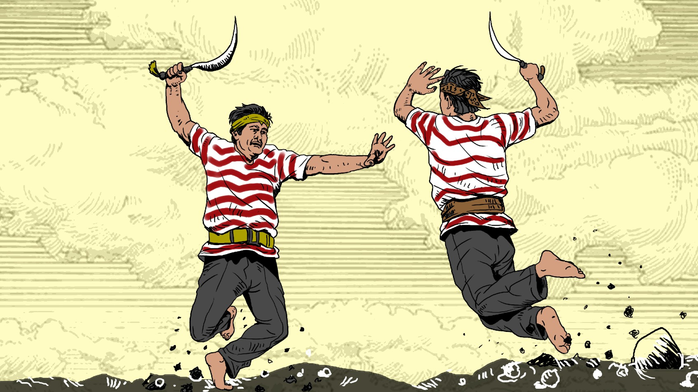

Tradisi-tradisi Madura
"Ayo, kenali lebih dalam ciri khas dan kearifan lokal masyarakat Madura yang kaya akan nilai-nilai luhur!" .
Lihat Detail
Karapan Sapi
Lomba adu cepat sapi tradisional yang penuh semangat dan warna-warni budaya.
Lihat Detail
Batik Tulis Madura
Motif cerah dan unik dengan proses pembuatan tradisional yang penuh filosofi.
Lihat Detail
Kuliner Madura
Ragam kuliner khas yang menggugah selera, seperti sate madura dan masih banyak lagi.
Lihat Detail